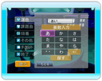
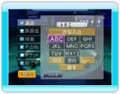

| 新曲ピックアップ |
配信したばかりの新曲の中から、特にお勧めする曲を表示します。 |
| 特集 |
季節にあった曲や話題のアーティストなどの特集から、お好みの曲を探すことができます。 |
| よみがな |
曲名、歌手名、ドラマ名、アニメ名から曲を探すことができます。
ケータイと同様の文字入力方法で、探したい曲名などの読みがなを、先頭から入力してください。
読みがなは全て入力しなくても構いません。「探す」で該当する曲名や歌手名を表示します。かな入力と英数入力を切り替えて使用することができます。

かな入力画面 英数入力画面 |
| ジャンル |
アニメ、洋楽などのジャンルから曲を探すことができます。 |
| お気に入り |
お気に入り登録している曲の中から歌いたい曲を探すことができます。 |
| 検索ランキング |
週間ランキングやジャンル毎の月間ランキングから曲を探すことができます。 |
| 追加曲 |
新着の曲を、期間ごとに見ることができます。 |
| 履歴 |
最新50曲までの予約履歴から選曲できます。 |
| 選曲番号 |
通信カラオケJOYSOUNDと同じ選曲番号で曲を探すことができます。
※ 一部演奏できない曲もあります。 |